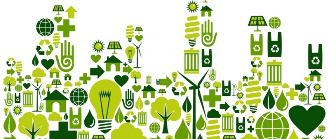

Maple Leaf’s pledge to become the most sustainable protein company is predicated on their understanding that the global food industry should not and cannot continue to operate as it does currently. As the worldwide population continues to grow, with an estimated population of 9 billion by 2050, resource-intensive animal proteins will not be able to sustainably meet global demand.
Maple Leaf is well positioned to be at the frontier for change in this industry and serve as an example for their competitors on how to transition into more sustainable operations. In 2018, CEO Michael McCain pledged to reduce their overall environmental footprint by 50% by switching to more sustainable business practices and removing anything artificial from their products. McCain wants Maple Leaf to serve as an example for other food producers by sharing their sustainability advancements and practices throughout the process.
The future of food production will be a system that accounts for the impact of negative externalities it generates. To create a sustainable global food system, consumption of resource intensive foods such as animal based proteins needs to decrease significantly. This requires a significant shift in consumer mindset towards sustainable plant-based foods. Maple Leaf can help this mindset shift by increasing the availability and quality of their plant-based proteins. They can also work to educate the public regarding the environmental impact of their food choices and the benefits of switching to plant-based alternatives.
The development of a global sustainable food system will require significantly more participation than just Maple Leaf adding more plant-based alternatives. There are a number of different alternatives that Maple Leaf should consider addressing the issues in their current operations. The options consist of (1) Partnering with an NGO to promote their sustainability message and (2) Sourcing products from cultured meat rather than livestock.